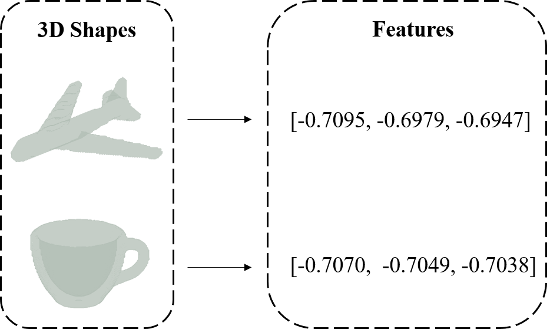

readImage: Construct a 3D Array
Here, we provide an example of how to construct an input 3D array. The path can either point to a folder containing a sequence of 2D image slices, each stored as an individual .png file, or it can direct to a 3D image file. Our current implementation supports .im and .stl formats.
dim = 128;
path = 'please input the path that contains the slices/3D image file';
arr = readImage(path, dim);
get3DKMI: Feature Extraction
If we want to extract the global features from the image:
invariants = get3DKMI(arr, dim);
If we want to specify the order of the moments:
order = 3;
invariants = get3DKMI(arr, dim, order);
If we want to extract the local features around the point-of-interst (POI) instead of the global features:
POI = [63, 63, 63];
invariants = get3DKMI(arr, dim, POI);
We can also specify the order of the moments when extracting the local features:
POI = [63, 63, 63];
order = 3;
invariants = get3DKMI(arr, dim, POI, order);
Visualization
We also provide a way to visualize the input 3D image:
color = [178, 190, 181] / 255;
figure, patch(isosurface(arr, 0.1), 'Facecolor', color, 'FaceAlpha', 0.5, 'edgecolor','none')
Results
We selected two distinct 3D shapes from the McGill 3D shape benchmark: an airplane and a cup as shown below. Ideally, the invariant values should exhibit notable differences, considering the substantial dissimilarity between the shapes. However, we observed only slight differences. This outcome is actually acceptable, given that the distance between the original and transformed images is significantly smaller than this numerical difference.
The below image depicts the mean squared error (MSE) between the 3D Krawtchouk moment invariants of the original object and the ones under translation, scaling, and rotation. The left and right columns show the mean squared error between the original object and the transformed ones regarding global features and local features, respectively. Three transformations are involved in total: (a)--(b) when the object is shifted (translation); (c)--(d) when the size of the object changes (scale); and (e)--(f) when the object rotates about the x-axis, y-axis, and z-axis (rotation). All transformed objects still fit the size of the original image.